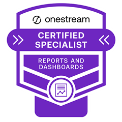
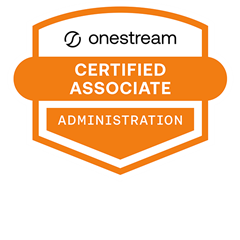
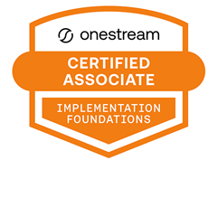
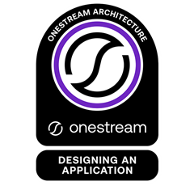
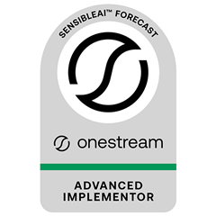
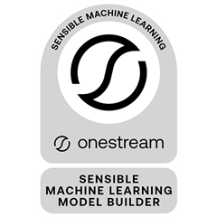
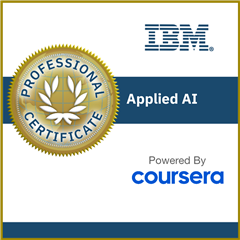
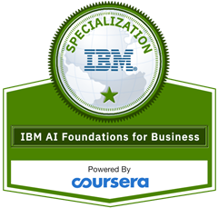
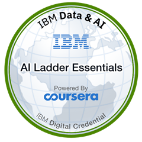

M.Sc. Economics
University of Freiburg, Germany · 2015–2018 · Grade 1.2
Majors: Controlling, Accounting & Finance, Corporate Governance & Marketing. Exchange semester at University of Nagoya, Japan.
Managing EPM Consultant / AI Transformation Manager
I help global organizations plan smarter — designing OneStream EPM and AI‑enabled FP&A frameworks that cut cycle times and sharpen decision‑making.
Leading finance transformation at the intersection of FP&A, OneStream EPM, and AI automation — 10+ years designing enterprise‑wide planning frameworks that scale, reduce cycle times, and elevate decision‑making for global organizations.
I've partnered with senior finance leaders and CFOs at Migros, State of Geneva, Nokera, Montana Aerospace, Delivery Hero, Glovo, ABB, and DSM‑Firmenich — consistently reducing budgeting cycles by 20–40%, automating 30–50% of manual reporting, and lifting forecasting accuracy by up to 15%.
I work across strategy, solution design, and hands‑on implementation, bridging finance leadership goals and technical EPM execution — specializing in OneStream design, scenario modeling, KPI frameworks, and driver‑based forecasting.
Exploring OneStream, rethinking your FP&A architecture, or building AI‑enabled performance management? Let's talk.
CPM Partners
End‑to‑end OneStream EPM delivery for FP&A, consolidation, and strategic planning across multinational clients — DSM‑Firmenich, Delivery Hero (Glovo, Talabat), Montana Aerospace, State of Geneva, and ABB. Leads consultant teams, advises CFOs and CEOs, and built an AI‑supported onboarding and training program.
7Days Media Services
Management consulting across network, fleet, site, and process optimization; led the Migros Online client integration and COVID‑19 continuity planning.
7Days Media Services
Built growth KPI reporting, CRM pipeline reporting, and a staff cost budgeting tool.
Heineken Switzerland
Supported a Nielsen database migration and delivered ad‑hoc analysis across marketing and trade channels.
Elcotherm AG
Project Lead, Service Incentive Mechanisms (2017–2018) — designed and rolled out employee incentive mechanisms from survey through implementation. Strategic Controller (2014–2017) — built a medium‑term financial model and scenario simulations for executive decision‑making; supported SAP restructuring.
University of Freiburg, Germany · 2015–2018 · Grade 1.2
Majors: Controlling, Accounting & Finance, Corporate Governance & Marketing. Exchange semester at University of Nagoya, Japan.
University of Mannheim, Germany · 2010–2014 · Grade 2.5
Exchange semester at University of Lausanne, Switzerland.

OneStream Certified Specialist (OCS) — Reports & Dashboards OneStream · expires Mar 2030
OneStream Certified Associate (OCA) — Administration R2 OneStream · expires Mar 2030
OneStream Certified Associate (OCA) — Implementation Foundations OneStream · issued Mar 2026
OneStream Architecture: Designing an Application OneStream · issued Dec 2022
SensibleAI™ Forecast — Advanced Implementor OneStream · issued Nov 2025
Sensible Machine Learning — Model Builder OneStream · issued Dec 2024
IBM Applied AI Professional Certificate (V3) IBM · issued Nov 2023
IBM AI Foundations for Business IBM · issued Nov 2023
IBM AI Ladder: Deploying AI in the Enterprise IBM · issued Nov 2023OneStream · Consolidation & FP&A
Stabilizing a complex, multi-entity OneStream build mid-flight — across two brands and a consolidation stream under strain.
Delivery Hero (including Glovo) was in the build phase of a complex OneStream implementation, with the consolidation stream under particular strain and several client-side team members encountering OneStream for the first time.
Joined mid-engagement with responsibility across both Delivery Hero and Glovo: root-cause problem-solving rather than surface fixes, translating OneStream's technical concepts into business terms for stakeholders new to the platform, and stepping in to stabilize the consolidation stream when it was under pressure.
Calm, clear stakeholder management throughout a high-pressure engagement, strong working relationships across both teams, and an unreserved recommendation from the project lead.
His stakeholder management was exemplary: always measured under pressure, clear and concise in his communication, and always focused on delivery.
Joe Paul, Project Lead, Delivery Hero
OneStream · Public-Sector Planning
A budgeting and long-term planning platform engineered for cantonal governance and strict security requirements.
The State of Geneva was replacing fragmented, manual planning processes with OneStream as its strategic planning and budgeting platform — requiring deep adaptation to public-sector needs: complex planning structures, workflow governance, and strict security requirements.
Designed and built custom business rules and workflow automation for budgeting and long-term planning, dynamic metadata management for planning dimensions, granular security logic tied to organizational responsibility, custom dashboards and validation logic, and advanced reporting and Cube View functionality — while optimizing data integration and performance throughout.
A highly customized OneStream application meeting the canton's governance and security requirements, replacing manual work with automation and controlled workflows, and giving business users a centralized planning platform — delivered and expanded across multiple implementation phases.
OneStream · Budgeting & Forecasting
From manual, Excel-based work to a single source of truth for a fast-growing finance organization.
As Nokera grew, they needed a scalable EPM platform to consolidate budgeting, forecasting, and reporting — moving off manual, Excel-based work toward a single source of truth for finance.
Implemented and customized OneStream end-to-end: designed budgeting and forecasting planning models, built custom business rules to automate calculations, created tailored Cube Views and dashboards for different business users, configured workflows and security to match the org structure, and worked closely with finance stakeholders through testing and adoption.
A centralized planning and reporting platform that cut manual effort, improved data consistency, and gave finance greater transparency into budgeting and forecasting — with a scalable foundation to support continued growth.
Translated from German
Daniel has extensive professional expertise and combines a deep understanding of financial processes with excellent system knowledge. I have rarely worked with someone who processes requests so quickly and develops suitable solutions within the shortest amount of time.
Ümran Mülhaupt, Project Lead and Senior Controller & Reporting Manager
Exploring OneStream, rethinking your FP&A architecture, or building AI‑enabled performance management? Let's talk.
Move: mouse, touch, or ↑ ↓ · Space or tap to start / pause